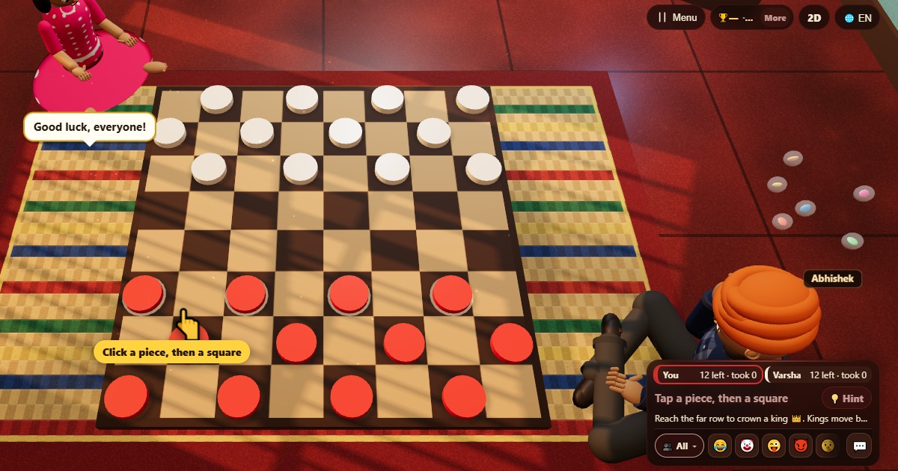

Шашки (Checkers)
- 👥 2 игроков
- Настольные игры
- 🆓
Гайд на русском
Прыгай через шашки соперника, бери их и проходи в дамки.
English name: Checkers

Как играть
- Шашки ходят на одну клетку по диагонали вперёд на свободное тёмное поле. Коснись шашки, затем отмеченной клетки.
- Чтобы бить, перепрыгни по диагонали через шашку соперника на свободную клетку за ней. Побитая шашка снимается.
- Если можешь бить — обязан, и если та же шашка может прыгнуть снова, она должна продолжать.
- Шашка, дошедшая до последнего ряда, становится дамкой, и на этом ход заканчивается. Дамки ходят и бьют по диагонали вперёд и назад.
Очки
Партия заканчивается победой или ничьей. В таблице итогов у победителя 1.
Кто побеждает
Ты побеждаешь, когда у соперника не осталось шашек или допустимых ходов. Сорок ходов у каждого без взятий и ходов простыми шашками — ничья.
Частые вопросы
Обязательно ли бить в шашках?
Да. В этих правилах бить обязательно, и когда взятие возможно, игра предлагает только ходы со взятием.
Как шашка становится дамкой?
Дойдя до последнего ряда. Коронованная шашка останавливается там и со следующего хода ходит в обе стороны.
Как играть
- Как гость: Без регистрации и входа. Выбери имя и играй сразу.
- С компьютером: Если никого нет, свободные места займут компьютерные игроки. Легко, нормально или сложно.
- Онлайн: Садись за открытый стол с игроками со всего мира.
- С друзьями рядом: Открой игру на одном телефоне и поделись кодом или QR-кодом. Друзья подключаются со своих телефонов.
- На одном телефоне: Передавайте телефон по кругу: одного устройства хватит всей семье.
Другие языки
- हिन्दी: चेकर्स
- Hinglish: Checkers
- Español: Damas
- Português: Damas
- Français: Dames
- Deutsch: Dame
- Bahasa Indonesia: Dam
- Türkçe: Dama
- Italiano: Dama
- 日本語: チェッカー
- 한국어: 체커
- 中文: 国际跳棋
- اردو: چیکرز
- नेपाली: चेकर्स
- বাংলা: চেকার্স
- English: Checkers · Полные правила (англ.)
Идеи игр
Все игры


В ChitPlay нет настоящих денег, ставок и призов. Очки ничего не стоят.